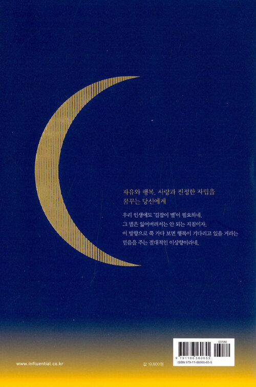
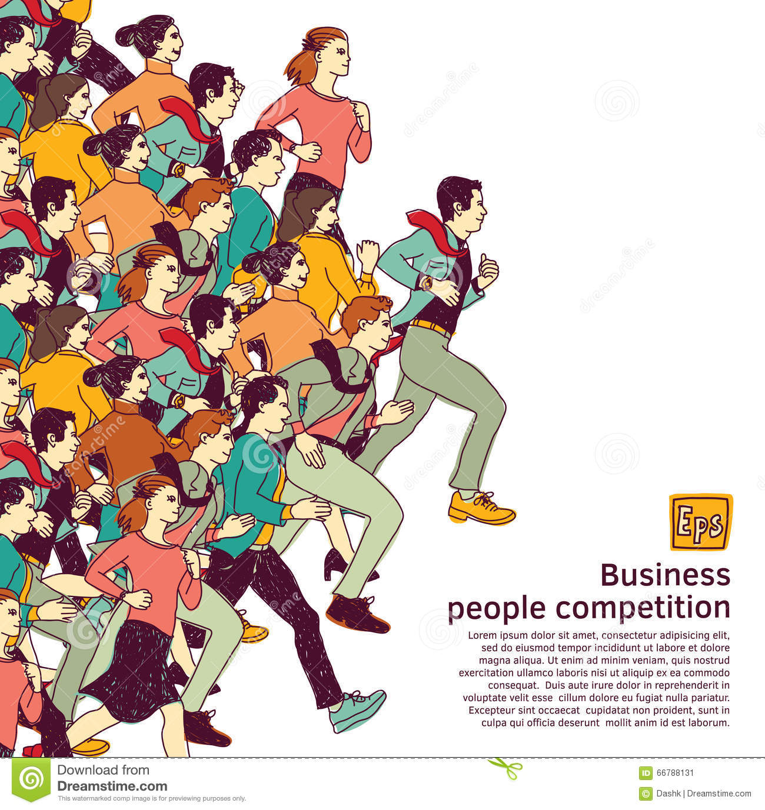
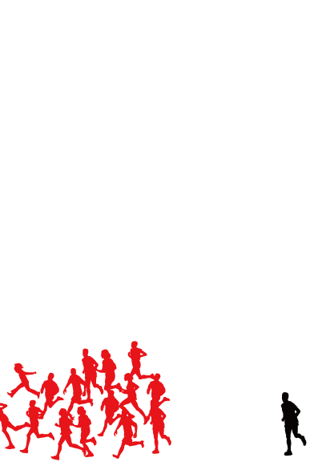
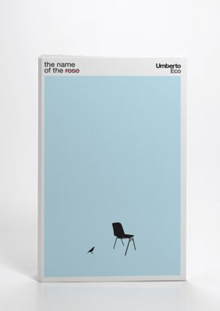
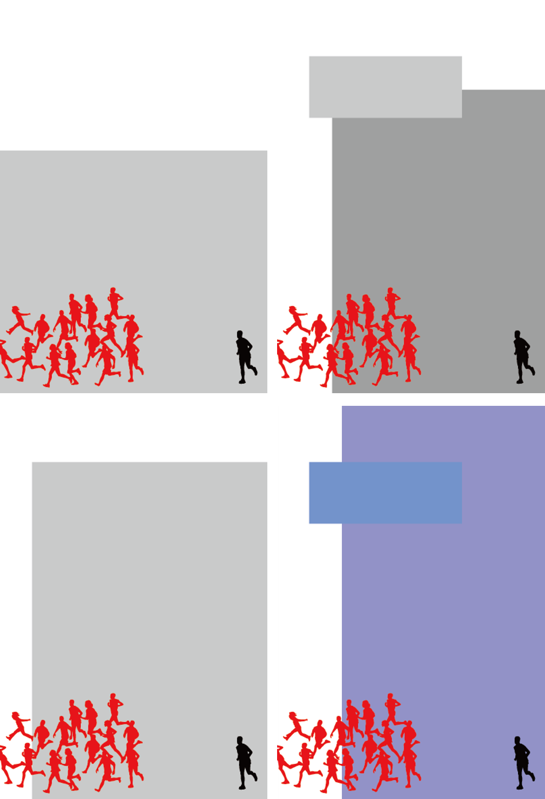
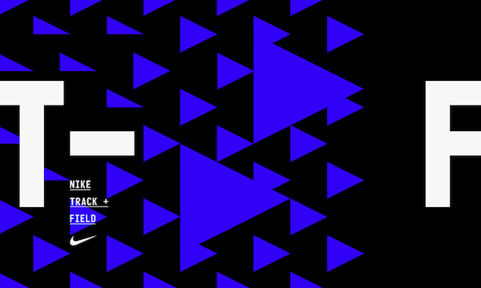
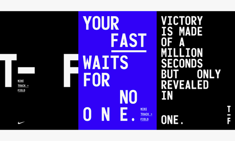
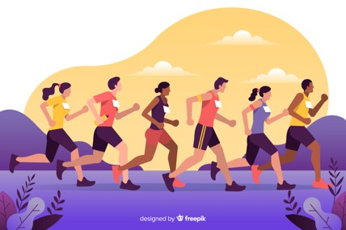
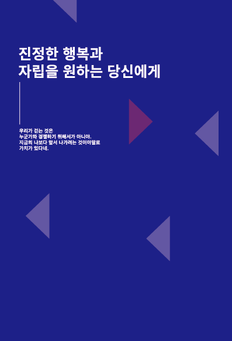

Define
:: 디자인 키워드 확립
Discover 단계에서 선정한 키워드 중
책의 내용과 관계 없다고 생각되는 '새벽' 키워드를 제외하고,
다른 키워드를 리디자인 키워드로 최종 선정하였습니다.
리디자인 키워드
변화 (Change) - 삶에 대한 변화
행복 (Happiness) - 변화할 삶의 결과, 도착점
용기 (Courage) - 변화하기 위한 용기
Define
:: 키워드의 타당성
이 책은 알프레드 아들러의 자유롭고 행복한 삶을 위한 가르침.
용기의 심리학입니다.
이 책에서는 행복하기 위한 변화와, 그것을 위한
용기를 가질 것을 계속해서 주장하며,
그에 대한 근거를 제시합니다.
그 근거 중 하나로, 이상적인 ‘나’로부터 오는 열등감과,
경쟁 심리에 대한 내용이 있습니다.
따라서, 리디자인 키워드는 “행복”, “변화”, “용기” 입니다.
Define
:: 디자인 모티브
미움받을 용기 합본 표지 후면 디자인을 참고하였습니다.
이 책의 표지 디자인은 후면에 책의 핵심 문장을 적고,
그에 맞는 표지 디자인을 진행한 것으로 추측할 수 있습니다.
이 방식을 이어받아 책의 핵심 문장 하나를 뽑은 후,
그에 맞는 모티프 확립 및 레퍼런스 조사를 진행하였습니다.

Define
:: 핵심 문장
“우리가 걷는 것은 누군가와 경쟁하기 위해서가 아니야.
지금의 나보다 앞서 나가려는 것이야말로 가치가 있다네.”
위 문장은 열등감으로 인해 불행한 ‘나’에 대한
해답을 제시하는 핵심 문장입니다.
디자인 키워드 (행복, 변화, 용기) 중
행복, 용기를 담고 있습니다.
위 핵심 문장을 디자인 모티프(경쟁)와 접목하여 리디자인을 진행하였습니다.
Define
:: 디자인 모티프
위에서 확립한 핵심 문장을 기반으로
디자인 모티프를 확립하였습니다.
“경쟁”
타인을 빨간색, ‘나’를 검은색으로 표현하여,
천천히 걸어가는 ‘나’를 특별하지 않은, 올바른 길을 걷고 있다는 것을 표현.
조금이라도 앞서가려 뛰어가는 사람들을
‘불행한 사람’, ‘특별한 사람’ 등으로 표현하였습니다.

Define
:: 디자인 원칙
독특하고 흥미로운 분위기를 연출
책의 표지로부터 책의 내용을 유추할 수 없어야만 함.
위 두 원칙에 의해,
문장을 읽은 후 이해할 수 있도록
의도적인 디자인을 진행 할 계획입니다.
심리학이 담긴 만큼 답이 정해져 있지 않은 표지 디자인
: 책을 읽는 사람이 어느 부분에 해당하는지 알 수 없고,
책을 읽은 후 어느 부분에 포함되고 싶은 지
스스로 결정할 수 있도록 디자인 전개하였습니다.
(단, 표지를 보고 답을 알아서는 안됨.)
Define
:: 컨셉 확립
“남들보다 앞서가기 위해 걷는 것이 아닌, ‘나’를 넘어서기 위해 걷는 것이다.”
“행복해지고 싶다면 변해야 한다. 그러기 위해선 변할 수 있는 용기가 필요하다.”
Stand against StereoType
Stand Against
StereoType

Develop
:: 일러스트 활용
빈 공간에 일러스트로
뛰어가는 사람들과 걸어가는 ‘나’의 모습을 담았습니다.
Define 단계에서의 디자인 원칙
<책을 읽기 전 표지만을 보고
내용을 유추할 수 없도록 의도된 디자인>
을 반영하여 아무런 추가 설명 없이
일러스트만으로 디자인 하였습니다.
디자인 의도를 전달하기엔 좋았으나,
디자인 자체가 너무 허전하고,
일러스트의 퀄리티가 다소 아쉬웠습니다.
Develop
:: 레퍼런스 활용 (1)
일러스트의 어색함을 해결하기 위해,
가장 큰 문제인 ‘배경의 허전함‘을 해결할
레퍼런스 자료가 필요했습니다.
교수님의 피드백으로 몇 가지의 레퍼런스를 보게 되었고,
그 중 ‘면’을 활용한 표지 레퍼런스가 눈에 띄었습니다.
해당 레퍼런스를 토대로 2차 시안 작업을 진행하였습니다.


Develop
:: 레퍼런스 활용 (2)
기존 1차 시안에 최대한 단조로운 느낌으로
면 요소를 추가하였습니다.
면 요소의 의미는 ‘제목과 일러스트의 연결’ 이었는데,
일러스트의 문제인지 방해요소로 작용하였습니다.
1차 시안에 비해 개선되긴 했으나,
여전히 부족한 느낌이 들었고, 아래 일러스트 역시
수정해야 했습니다.
Develop
:: 레퍼런스 활용 (3)
1, 2차 시안에서 일러스트의 의미는
‘경쟁’하기 위해 ‘달려가는’ 사람들이며,
이에 맞는 배경 혹은 추가 디자인 요소가
반드시 필요한 상황이었습니다.
단, 디자인 원칙은 파괴하지 않기 위해
직접적인 표현은 하지 않고,
선, 도형, 면 등으로 표현하려 했습니다.
피드백과 고민 끝에 결정한 레퍼런스 자료입니다.


Develop
:: 레퍼런스 활용 (3)
배경 레퍼런스를 찾고 난 후,
타이틀 및 후면 텍스트 역
배경과 통일되어야 할 것 같아
추가 레퍼런스를 조사하였습니다.
마침 배경 레퍼런스와 느낌이 비슷한
레퍼런스 자료를 찾게 되어 이 자료를 참고하여
3차 최종 디자인을 진행하였습니다.
최종 결정한 레퍼런스 자료입니다.
Develop
:: 레퍼런스 활용 (3)
배경과 텍스트 레퍼런스를 찾은 후,
수정할 일러스트에 대한 자료조사를 시작하였습니다.
기존 일러스트의 경우
다양한 포즈의 벡터 이미지를 그대로 가져와 사용하였지만,
이번 작업에서는 어색함을 줄이기 위해
기존 레퍼런스를 약간씩 변형하여
어색한 느낌을 최대한 덜어내었습니다.


Develop
:: 최종 작업
레퍼런스3 을 수정하여 일러스트를 다시 작업한 결과
전보다 부드럽고 자연스러운 일러스트가 완성되었습니다.
타이틀 텍스트의 느낌은 레퍼런스2-1 을 참고하여 작업하였습니다.
배경의 컬러와 배경의 요소는 레퍼런스2 를 참고하였습니다.
일러스트의 흰색, 빨간색 사람과
반대되는 방향의 삼각형 요소를 대입하여,
일러스트는 책이 말하고자 하는 내용,
배경 요소는 이 책의 내용에 대항하는 요소이자,
우리 사회의 고정관념을 나타냅니다.
Develop
:: 최종 작업
텍스트, 배경, 배경 디자인 요소 등은
전면 표지와 동일한 방식으로 작업하였습니다.
단, 기존 1, 2차 시안 후면 디자인에 작게 넣었던 일러스트의 경우,
복잡해 보일 수 있으며, 특별한 의미 없이
반복되는 요소이므로 삭제하였습니다.

미움 받을 용기
최종 아웃풋